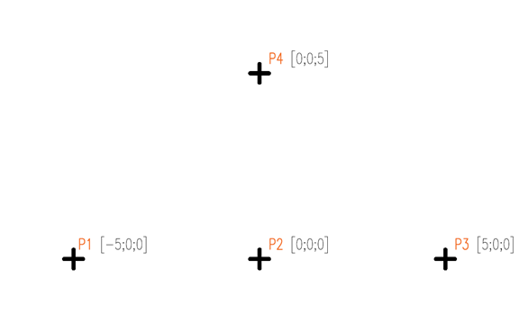
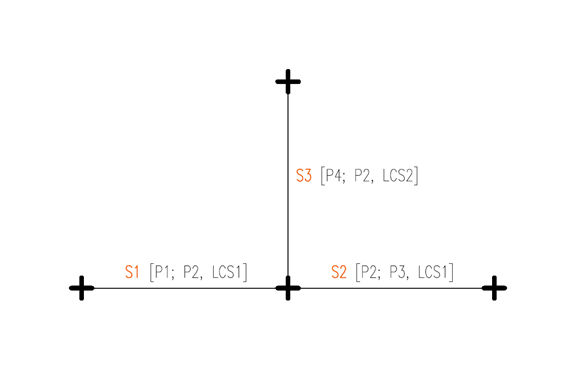
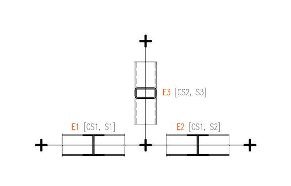
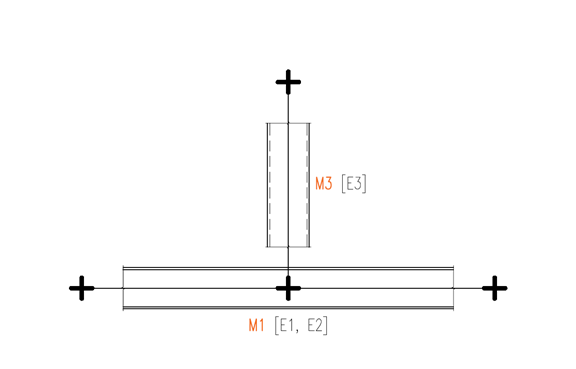
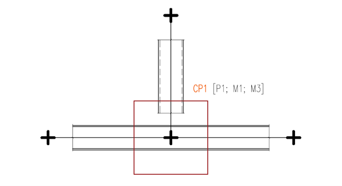
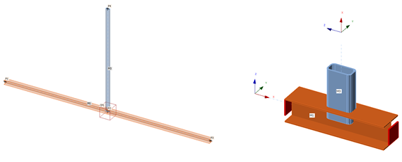

This page visualizes the process of generating the Geometry of a structure through the IOM.
Points 3D
Points3D are the base constituents of IOM Geometry. They are used to define Segments3D, and also Connection Points later on, which may or may not coincide with Segment3D start and endpoints. Point3D is defined by an Id, a Name, and coordinates in 3D space:

Segments 3D
There are either linear or arc segments. This example deals with simple linear Segments3D. Each LineSegment3D is defined by its StartPoint, EndPoint, and a Local Coordinate System. This LCS then controls the cross-section positioning, as well as internal force results definition.

Elements 1D
Elements enrich the information contained in Segments 3D by adding the information about Cross-sections. Please note that in order to define an Element 1D, you first need to define a Material, then a Cross-section, then combine this data with an appropriate Segment3D. Start and End eccentricities are also possible to set in this stage.

Members 1D
Members1D no longer add new information, they are simply collections of Elements1D. In most cases, a single Element1D is used in each Member1D. Assigning multiple Elements1D under one Member1D is effectively making them continuous, as can be seen on the image below:

Connection Point
After the necessary geometry has been defined, you can generate a ConnectionPoint by defining a Point 3D, and a collection of Members 1D.

Structural Model and Connection Model
You can see the resulting Structural Model that is generated based on the IOM in the background (or displayed in the Checkbot app), as well as the Connection Model in the Connection app side by side. Please note the Points, Members, their Cross-sections and Local Coordinate Systems.
